Equalscope
Equalscope1. 시작하기 전에
1.1 구성품과 각 부분 명칭

| 구분 | 내용 |
|---|---|
| 본체 | 2.8" 터치 LCD · 압력 센서 · SD 카드 슬롯(카드 별매) · 내장 배터리 · 스피커 · USB 포트 |
| 외부 부속 | 이퀄 벤트(니모·고래상어 캐릭터) · 4mm PU 튜브 · 압력 조절 밸브 · USB 케이블 |
| 케이스 | 3D 프린팅 본체(주황·파랑) · 받침대 겸 커넥터 보호 커버 |
1.2 충전과 전원
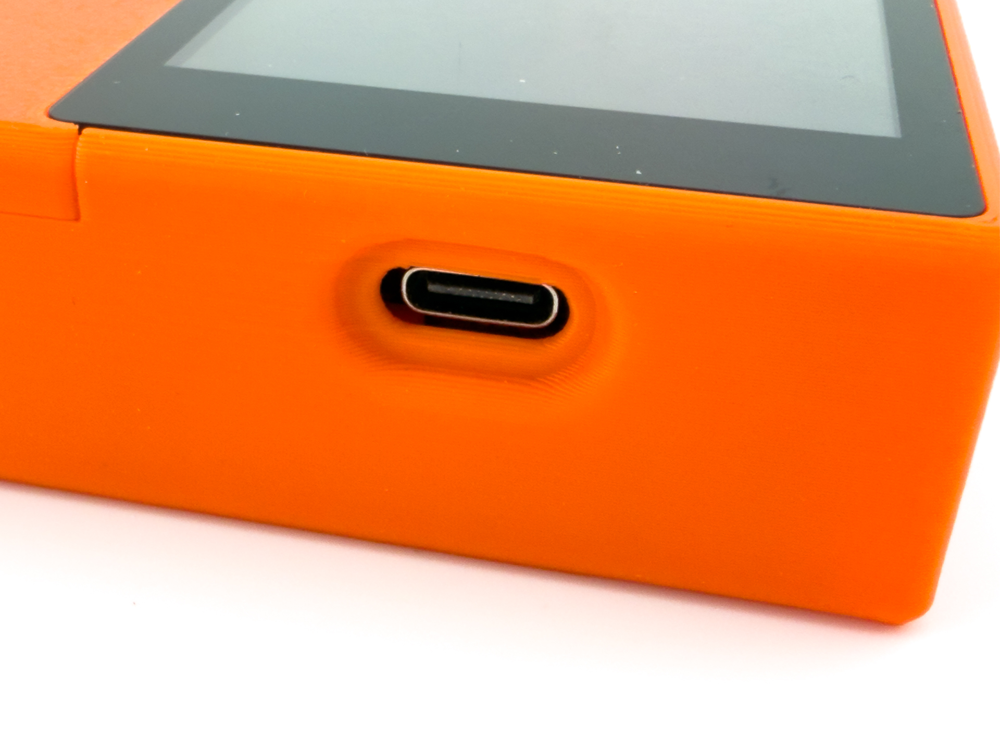
- 충전: 본체 USB 포트에 USB-C 케이블을 연결해 충전합니다.
- 충전 케이블을 꽂으면 USB 커넥터 왼쪽에 초록색 불이 켜져 충전 상태를 알 수 있습니다. 충전이 끝나면 이 불이 꺼집니다.
- 화면에는 별도의 충전 표시(번개 아이콘)가 없습니다. 대신 배터리 잔량이 약 10초 주기로 갱신되므로, 충전 중에는 % 가 차츰 오르는 것으로도 확인할 수 있습니다.
- 켜기: 물리 전원 버튼을 약 3초간 누르면 켜집니다. 부팅 화면 후 약 5초간 영점(0점) 보정을 진행합니다.
- ⚠️ 영점 보정 중에는 이퀄 벤트를 코에 대거나 튜브에 압력을 가하지 말고, 대기압 상태로 그대로 두세요. 이 시간에 측정된 기준점이 이후 측정 정확도를 좌우합니다.
- 끄기: 두 가지 방법이 있습니다.
- 물리 전원 버튼을 약 3초간 길게 누르기
- 메인 화면의 [전원] 버튼 누르기
- 자동 종료: 설정 시간 동안 조작이 없으면 자동으로 꺼집니다 (9.4).
- 저전량 보호: 배터리 15% 이하면 주기적 경고음, 5% 이하면 10초 카운트다운 후 측정을 저장하고 스스로 꺼집니다. 경고음이 들리면 충전해 주세요 (충전 중에는 발동 안 함).
1.3 SD 카드
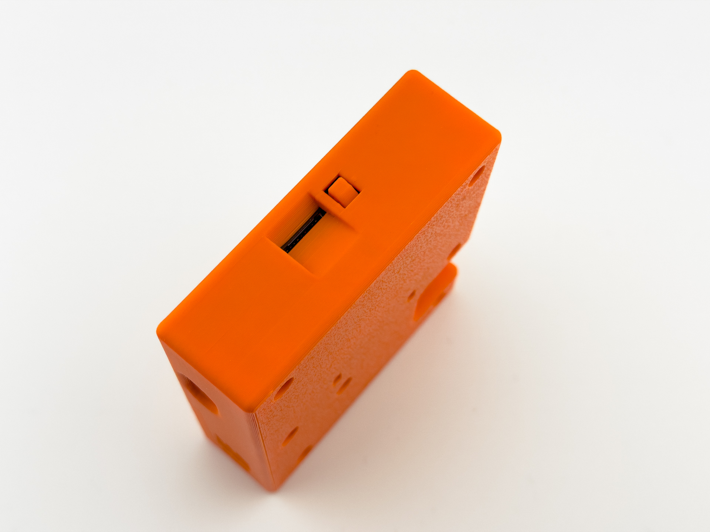
- 본체 슬롯에 꽂아 사용하며, 전원이 켜진 상태에서도 삽입·제거할 수 있습니다.
- 측정 파일 저장과 스크린샷에 사용됩니다.
- SD가 없어도 내부 메모리로 측정·저장이 가능합니다 (저장소 차이는 6.2 참고).
- 어떤 카드를 써도 됩니다. 32GB 이하(FAT32)는 물론, 64GB 이상 대용량 카드(exFAT)도
그대로 인식합니다. 액션캠에 쓰시던 카드를 꽂아도 됩니다.
- 측정 파일은 아주 작아서 8GB로도 몇 년을 씁니다. 큰 카드가 필요하지는 않습니다.
- 펌웨어 v1.1g 이하에서는 64GB 이상 카드를 읽지 못합니다. 그 버전을 쓰고 계시면 카드를 FAT32로 포맷해 업데이트를 먼저 하신 뒤에는 아무 카드나 쓰실 수 있습니다.
1.4 주요 사양
| 항목 | 내용 |
|---|---|
| 모델 | EQ-28 |
| 디스플레이 | 2.8인치 터치 LCD (320×240, 가로형) |
| 크기 | 본체 90 × 77.6 × 25 mm · 가방 160 × 100 × 70 mm |
| 압력 측정 | 압력 센서 · 40Hz 샘플링 · 부팅 시 자동 영점 보정 |
| 저장 | 내부 메모리 + microSD 슬롯 · SD 카드는 미포함(별매) |
| 오디오 | 스피커 (압력 알람 · EQ 인터벌 알람) |
| 전원 | 내장 리튬폴리머 배터리 3.7V 1,000mAh (USB 충전) |
| 커넥터 | 4mm 공압 퀵 커넥터 |
| 연결 · 업데이트 | USB로 PC 파일 전송 · SD 카드로 펌웨어 업데이트 |
| 언어 | 한국어 / English |
2. 기본 측정
2.1 연결과 착용

- 본체 ↔ 튜브 연결: 튜브 끝의 커넥터(암)를 본체 커넥터(수)에 밀어 넣으면 딸깍 소리와 함께 체결됩니다. 분리할 때는 커넥터(암)를 그냥 잡아당기면 자연스럽게 빠집니다.
- 튜브 ↔ 이퀄 벤트 연결: 이퀄 벤트의 원터치 피팅에 튜브를 그대로 밀어 넣으면 됩니다. 분리할 때는 피팅 끝의 플라스틱 부분을 누른 상태에서 튜브를 잡아당기면 빠집니다.
- 전원을 켜고 영점 보정이 끝나면 측정 준비 완료입니다.
- 이퀄 벤트는 측정할 때 코에 갖다 댑니다 — 이퀄 벤트 앞쪽의 구멍을 콧구멍에 잘 맞춰 대면 됩니다. (측정 시작 후 — 2.3 참고)
2.2 압력 조절 밸브 사용법
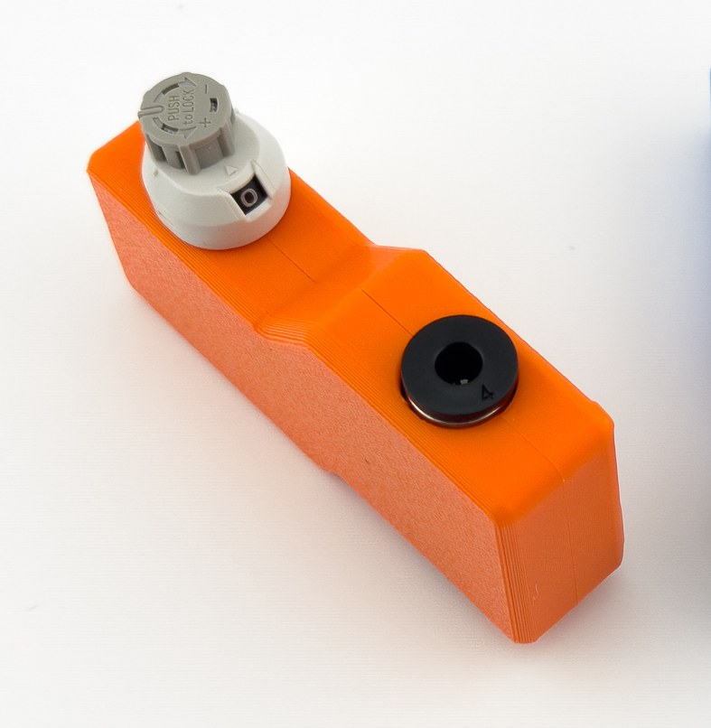
- 밸브의 눈금 다이얼로 공기 배출 정도를 조절합니다. 숫자가 클수록 더 많은 압력이 빠집니다.
- 조작 방법: 눈금을 바꿀 때는 밸브를 당긴 뒤 돌리고, 그대로 고정(잠금)하려면 밸브를 누릅니다.
- 입안 공기가 줄어드는 상황을 간접적으로 시뮬레이션해, 깊은 수심의 핵심 기술(특히 마우스필)을 지상에서 반복 훈련할 수 있습니다.
- 눈금이 있어 같은 조건을 반복 설정하기 쉽습니다.
2.3 측정 흐름
[시작] 누름 → 이퀄라이징 측정(실시간 그래프) → [정지] → 자동 저장 → [분석]
- [시작] — 측정을 시작합니다. 그래프가 실시간으로 그려집니다.
- 측정 — 이퀄 벤트를 코에 갖다 대고 이퀄라이징을 수행합니다. 현재/최저/최고 압력이 숫자와 그래프로 표시됩니다.
- [정지] — 측정을 멈추면 결과가 자동 저장됩니다 (6.1).
- [분석] — 정지 후 [시작] 버튼이 [분석]으로 바뀝니다. 누르면 패턴 분석 결과를 볼 수 있습니다 (5장).
- 다시 측정하려면 [리셋]으로 그래프를 초기화합니다.
2.4 메인 화면 보는 법
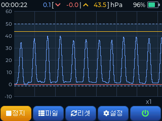
측정 중 메인 화면에는 다음이 함께 표시됩니다.
- 압력 3값 — 현재 / 최저(▼) / 최고(▲) 압력 (hPa)
- 스톱워치 — 좌측 상단, 경과 시간(hh:mm:ss)
- 배터리 잔량 — 우측 상단
- 실시간 그래프 — 중앙. 지금까지의 최고점=주황선 · 최저점=빨강선으로 추적합니다 (자세한 읽는 법은 4장)
3. 화면 조작
3.1 버튼 5개
메인 화면 하단에는 5개의 버튼이 있습니다. [시작] [파일] [리셋] [설정] [전원]
| 버튼 | 동작 |
|---|---|
| 시작 | 측정 시작. 측정 중에는 정지, 정지 후에는 분석으로 라벨이 바뀝니다 |
| 파일 | 저장된 측정 파일 보기 (6장) |
| 리셋 | 그래프를 초기화하고 시작 상태로 되돌림 |
| 설정 | 옵션 및 테마 (8장) |
| 전원 | 눌러서 기기 끄기 (아이콘만 표시). 물리 전원 버튼을 3초간 길게 눌러도 꺼집니다 |
3.2 제스처
| 제스처 | 동작 |
|---|---|
| 핀치 (두 손가락) | 그래프 시간축 줌 인/아웃 |
| 스와이프 (한 손가락 좌우) | 그래프 좌우 스크롤 |
| 세 손가락 탭 | 화면 스크린샷 (SD 카드 필요 — 자세히는 6.7) |
4. 그래프 읽기
메인 화면 중앙의 실시간 그래프는 가로축 = 시간, 세로축 = 압력(hPa) 입니다. 40Hz(초당 40회) 고속 샘플링으로 입·귀 안의 압력 변화를 거의 실시간으로 그립니다.
4.1 그래프 구성 요소
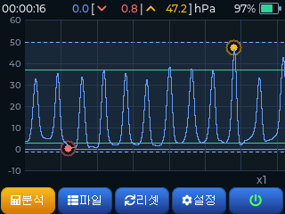

| 요소 | 모양 | 의미 |
|---|---|---|
| 측정선 | 기본 실선 | 현재 측정되는 압력값. 그래프의 주인공 |
| 최고점 마커 | 상단 표시/점 | 측정 구간의 가장 높은 압력 지점 |
| 최저점 마커 | 하단 표시/점 | 측정 구간의 가장 낮은 압력 지점 |
| 참조선 | 별도 색 선 | 불러온 참조(모범) 그래프 — 6.5 참고 |
| 평균선 | 수평선 | 분석된 고점/저점의 평균 위치 (측정 정지 후 표시) |
| 훈련 밴드 | 음영 띠 + 점선 경계 | 설정한 압력 알람 범위(9.2) |
4.2 화면 상단 숫자
그래프 위쪽에 세 가지 압력이 실시간 숫자로 표시됩니다.
- 현재 압력 — 지금 이 순간의 압력
- 최저 압력 (▼) — 측정 시작 이후 최저값
- 최고 압력 (▲) — 측정 시작 이후 최고값
좌측 상단에는 스톱워치(경과 시간), 우측 상단에는 배터리 잔량이 함께 표시됩니다.
4.3 훈련 밴드(압력 알람 범위)
설정에서 압력 알람을 켜면(9.2), 지정한 최저~최고 압력 구간이 그래프에 음영 띠로 그려지고 위아래 경계가 점선으로 표시됩니다.
- 목표 압력 범위를 눈으로 보면서 그 안에서 이퀄라이징을 유지하는 훈련에 사용합니다.
- 압력이 범위를 벗어나면 알람음으로 알려줍니다 (볼륨 설정 시).
4.4 줌과 스크롤
- 핀치(두 손가락 벌리기/오므리기) — 시간축 확대/축소. 짧은 구간을 자세히 보거나 전체 흐름을 한눈에.
- 스와이프(한 손가락 좌우) — 확대 상태에서 그래프를 좌우로 스크롤. 측정·참조 그래프 모두 적용됩니다.
줌 배율은 화면 우하단에 표시됩니다(x1, 1/2 등). 기본 배율은 설정에서 바꿀 수 있습니다(9.3).
5. 측정 결과 분석

측정을 정지하면 결과가 자동 저장되고, [시작] 버튼이 [분석]으로 바뀝니다. [분석]을 누르면 통계값과 패턴 판정, 그리고 조언 메시지가 표시됩니다.
5.1 통계값 읽기
분석 화면 오른쪽(또는 별도 박스)에 표시되는 숫자들의 의미입니다. 표시되는 항목은 패턴 유형에 따라 달라집니다 — 진동형(발살바·프렌젤 계열)은 피크 기반 지표를, 유지형(마우스필)은 안정성 기반 지표를 보여줍니다.
공통 지표
| 표시 | 의미 | 읽는 법 |
|---|---|---|
| 시간 | 측정 지속 시간 (초) | |
| 최대 / 최소 | 구간 최고·최저 압력 (hPa) | |
| 평균 | 구간 평균 압력 (hPa) |
진동형 지표 (발살바 / 프렌젤 / 마우스필 프렌젤 / BTV)
| 표시 | 의미 | 읽는 법 |
|---|---|---|
| 횟수 | 감지된 이퀄(피크) 횟수 | 반복 이퀄의 개수 |
| 주기 | 평균 피크 간격 (초) | 한 번의 이퀄에 걸린 평균 시간. 일정할수록 리듬이 안정적 |
| 고점 변동 | 피크 높이가 들쭉날쭉한 정도 (%) | 낮을수록 균일 — 매번 비슷한 세기로 이퀄했다는 뜻. 높으면 들쭉날쭉 |
| 상승 속도 | 저점→고점 평균 속도 (hPa/s) | 클수록 빠른 가압. 프렌젤이 발살바보다 빠른 경향 |
| 하강 속도 | 고점→저점 평균 속도 (hPa/s) | 압력을 푸는 속도 |
| 정점 유지 | 피크 꼭대기 부근에 머문 평균 시간 (초) | 짧으면 프렌젤(뾰족한 피크), 길면 발살바(넓은 피크) |
| 고점 (평균) | 피크들의 평균 압력 (hPa) | |
| 저점 (평균) | 피크 사이 골(트로프)의 평균 압력 (hPa) |
상승/하강 속도 단위 직관: 단위는 hPa/s이고 숫자가 클수록 빠른 변화입니다. (라벨에 "속도"가 들어 있어 별도 단위 표기는 생략합니다.)
유지형 지표 (마우스필)
| 표시 | 의미 | 읽는 법 |
|---|---|---|
| 유지 | 압력을 유지한 시간 (초) | 마우스필 압력을 얼마나 오래 안정적으로 들고 있었나 |
| 압력 편차 | 유지 중 압력 흔들림의 크기 (hPa) | 작을수록 안정. 귀로 미는 압력을 일정하게 잘 유지했다는 뜻 |
5.2 패턴 6종 해석


Equalscope는 측정 곡선의 형태적 특징을 종합하여 여섯 가지 기술 패턴 중 하나로 분류합니다.
| 패턴 | 곡선 특징 | 기술적 의미 |
|---|---|---|
| 발살바 | 느린 상승, 넓은 피크(정점 유지 김) | 배·흉부 압력 위주. 깊은 수심에선 한계. 프렌젤 전환 권장 대상 |
| 발살바+프렌젤 (발렌젤) | 느린 상승 → 어깨(shoulder) 구간 → 급격한 프렌젤 push | 발살바가 남아 있는 혼합형. 어깨 패턴이 전환의 증거 |
| 프렌젤 | 빠른 상승, 좁고 뾰족한 피크(정점 유지 짧음) | 혀로 압력 전달. 효율적. 더 깊은 수심으로 갈 수 있는 기반 |
| 마우스필 | 낮은 압력의 장시간 유지형 | 입안 공기를 채워 두고 천천히 소비. 깊은 수심 핵심 기술 |
| 마우스필 프렌젤 | 높은 저점 위에서 작은 진폭의 반복 | 마우스필 공기를 프렌젤로 잘게 나눠 쓰는 고급 패턴 |
| BTV (핸즈프리) | 매우 낮은 압력의 규칙적 진동 반복 | 공기를 밀지 않고 이관 주변 근육으로 이관을 직접 여는 기법. 선천적 요인이 커 되는 사람이 드문 희소 능력 |
5.3 분류 신뢰도
패턴 판정 옆에 신뢰도(%)가 함께 표시될 수 있습니다. 판정이 얼마나 분명한지를 나타내는 값입니다.
- 높음(분명) — 곡선이 해당 패턴의 전형에 가까움.
- 50% 부근(경계) — 두 패턴의 중간 형태. 예를 들어 "발살바와 프렌젤이 반반 섞인" 상태일 수 있음.
- 낮음(불일치) — 측정 중 기술이 일관되지 않았다는 신호로 해석합니다.
5.4 품질 등급과 경고
판정에는 품질 등급과 경고가 함께 붙습니다.
품질 등급
- 진동형: 피크 세기가 균일할수록 좋은 등급 — 매번 비슷한 세기로 이퀄했다는 뜻.
- 유지형(마우스필): 압력을 얼마나 흔들림 없이 유지했는지로 등급이 정해집니다.
경고 메시지 (해당 시 표시)
| 경고 | 의미 | 점검 사항 |
|---|---|---|
| 음압 감지 | 압력이 0 아래로 내려감 | 압력이 미는 방향이 아니라 역방향(음압)으로 당겨짐 / 누수 / 영점 오차 확인 |
| 과압 감지 | 비정상적으로 높은 압력 | 무리한 가압 — 부상 위험, 강도 낮추기 |
| 후반 불안정 | 측정 후반부 압력이 흔들림 | 지구력 한계 / 집중 저하 구간 |
| 짧은 세션 | 분석에 충분한 길이가 아님 | 더 길게 측정 권장 |
5.5 구간별 기법 분석 (EQ 인터벌)
EQ 인터벌(7.1)을 켜고 측정한 기록은, 인터벌 구간마다 기법을 따로 판정합니다. 하강 훈련에서 흔히 하듯 "얕은 구간은 프렌젤 → 깊은 구간은 마우스필"처럼 구간별로 기법을 바꿔가며 훈련해도, 전체를 하나로 뭉뚱그리지 않고 각 구간을 나눠 분석합니다.
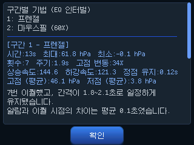
- 분석 화면 맨 위에 구간별 기법 요약이 표시됩니다. (예: "1: 프렌젤 / 2~3: 마우스필")
- 이어서 구간마다 통계와 조언이 순서대로 나옵니다 — 전체 세션 분석(5.1~5.4)과 같은 내용을 구간 단위로 봅니다.
- 구간이 너무 짧으면(5초 미만 등) 그 구간은 "판정 불가"로 표시됩니다.
- 인터벌을 끄고 측정한 기록은 종전처럼 전체를 하나로 분석합니다.
5.6 조언 메시지 활용
분석 화면 하단에는 패턴·품질에 맞춘 조언 문구가 표시됩니다. (예: "발살바 개입이 남아 있습니다. 배의 힘을 줄이고 혀로 압력을 전달하는 감각을 키워 보세요.")
⚠️ 이 분석과 조언은 측정된 압력 패턴에 기반한 참고용입니다. 의료적 진단이나 안전 보증이 아니며, 실제 훈련은 자격 있는 강사의 지도 아래 진행하세요.
6. 파일 관리
6.1 자동 저장과 파일 형식
측정을 정지하면 결과가 자동으로 저장됩니다. 별도 저장 버튼은 없습니다.
- 파일명:
EQ0001_120s.csv형식EQ+ 4자리 자동 번호(측정할 때마다 1씩 증가) + 측정 시간(초)- 예:
EQ0042_23s.csv= 42번째 측정, 23초짜리
- 형식: CSV. 열은
Time(ms), Pressure(hPa), Max, Min - 자동 다듬기: 측정 시작 직전과 끝의 빈 구간(압력 0)은 잘라내고, 실제 신호 구간만 저장합니다. 신호가 거의 없거나 너무 짧으면 저장하지 않습니다.
파일은 SD 카드가 장착돼 있으면 SD 카드에, 없으면 내부 메모리에 저장됩니다. SD 카드에 문제가 있으면 내부 메모리에 대신 저장하고 화면으로 알려 줍니다.
정지를 누르지 않아도 저장됩니다. 이퀄라이징을 한 뒤 1분 동안 아무 압력이 들어오지 않으면 훈련이 끝난 것으로 보고 자동으로 저장합니다. 장비를 그냥 두고 자리를 떠도 기록이 사라지지 않습니다.
- 세트 사이에 쉬는 인터벌 훈련에서는 1분 안에 다시 시작하면 끊기지 않고 한 파일로 이어집니다.
- 자동 저장으로 끝난 뒤 다시 이퀄라이징을 하면 그것은 기록에 남지 않습니다. 새로 남기려면 [정지] 후 [시작]을 다시 눌러 주세요.
- 아무것도 하지 않고 시작만 눌러 둔 경우에는 파일이 만들어지지 않습니다.
6.2 저장소: 내부 메모리 vs SD 카드
| 저장소 | 특징 |
|---|---|
| 내부 메모리 | 기기 내장. SD 없이도 항상 사용 가능. 용량 작음 · 파일 200개 초과 시 경고 색 표시(정리·SD 이동 권장) |
| SD 카드 | 대용량. PC로 옮기기 편함. 언제든 삽입·제거 가능 |
6.3 파일 화면 둘러보기

메인 화면에서 [파일]을 누르면 저장된 측정 목록이 열립니다.
- 상단에 3개 탭: 내부 메모리 / SD 카드 / 참조
- 파일은 한 페이지에 21개(3열 × 7행) 그리드로 표시되며, 최신 파일이 먼저 옵니다.
- 페이지가 여러 장이면 좌우 스와이프로 페이지를 넘깁니다. (하단에
1/2 32 files식 표시) - 파일 한 칸을 탭하면 선택됩니다.
6.4 내부 메모리 / SD 탭 동작
일반(내부·SD) 탭에서 파일을 선택하면 아래 버튼을 쓸 수 있습니다. [열기] [복사] [참조] [삭제] [닫기]
| 버튼 | 동작 |
|---|---|
| 열기 | 선택한 측정을 그래프로 불러옵니다. 메인 화면에 표시되고 [분석]으로 결과를 다시 볼 수 있습니다 |
| 복사 | 반대편 저장소로 복사. 내부 탭에서 누르면 SD로, SD 탭에서 누르면 내부로 |
| 참조 | 선택한 측정을 참조(모범) 목록에 등록. 등록하면 참조 탭에 나타납니다 (6.5) |
| 삭제 | 삭제 모드로 전환 — 여러 개를 한 번에 지울 수 있습니다 (6.6) |
| 닫기 | 파일 화면 종료 |
6.5 참조 탭과 "참조 그래프" 비교 훈련
참조 그래프는 Equalscope의 핵심 훈련 기능입니다. 모범 패턴을 배경에 깔아 두고, 내 실시간 그래프를 그 위에 겹쳐 따라하거나 비교합니다.
활용 시나리오: 강사가 모범 이퀄라이징 패턴을 측정해 참조로 배포 → 교육생이 그 참조를 배경에 깔고 똑같이 따라가며 훈련.
참조 탭에서 파일을 선택하면 버튼이 달라집니다. [열기] [해제] [이름 변경] [삭제] [닫기]
| 버튼 | 동작 |
|---|---|
| 열기 | 선택한 참조를 배경 그래프로 불러옵니다. 메인 화면에서 내 측정선과 겹쳐 보입니다(참조선) |
| 해제 | 메인 화면에 겹쳐 보이던 참조 그래프를 화면에서 내립니다(끄기). 참조 목록에서 삭제되는 것은 아닙니다 |
| 이름 변경 | 참조 파일 이름을 바꿉니다. EQ0042 같은 번호 대신 frenzel_ref처럼 의미 있는 이름을 붙여 두면 찾기 쉽습니다 (6.9) |
| 삭제 | 삭제 모드 |
| 닫기 | 종료 |
참조 파일은 내부 메모리에 보관됩니다(SD를 빼도 유지). 줌은 평소 값 그대로 유지되어, 폭이 다른 패턴(발살바/프렌젤 등)도 같은 스케일로 비교할 수 있습니다.
6.6 여러 파일 한 번에 삭제
[삭제]를 누르면 삭제 모드로 들어갑니다.
- 지울 파일들을 하나씩 탭해서 다중 선택 (상단에
선택 수 / 전체 수표시) - 전체 선택 버튼으로 한 번에 선택
- 다시 [삭제]로 확정, [닫기]로 취소
6.7 스크린샷 (화면 캡처)
화면을 세 손가락으로 탭하면 현재 화면이 즉시 이미지로 캡처됩니다. 분석 결과나 그래프를 그대로 피드백 자료로 남기는 데 유용합니다.
- 저장 위치: SD 카드의
capture/폴더에 PNG로 저장됩니다.- SD 카드가 필요합니다. 없으면 "SD 카드를 삽입하세요" 안내가 뜹니다.
- 파일명:
SCR_00292_EQ0206_21s.png형식SCR_+ 5자리 순번 + 그때 열어 둔 측정 파일 이름- 즉, 특정 측정을 화면에 띄운 채 캡처하면 어느 측정의 화면인지 파일명으로 바로 매칭됩니다.
- 연속 오작동을 막기 위해 캡처는 약 2초 간격으로 동작합니다.
활용: 교육생의 분석 화면을 캡처해 두면, 나중에 압력 패턴을 함께 보며 피드백하거나 측정 간 비교 자료로 쓸 수 있습니다.
6.8 PC로 파일 옮기기 (USB 드라이브 모드)
기기를 USB 케이블로 PC에 연결하면 이동식 저장장치처럼 인식시켜 파일을 직접 복사할 수 있습니다.
- 설정 → 파일 전송 행의 [연결] 버튼을 1.5초 길게 누릅니다.
- (우발적 클릭으로 USB 연결이 켜졌다 꺼지는 걸 막기 위해 일부러 길게 누르도록 했습니다)
- 확인하면 USB 드라이브 모드로 진입 — PC에서 저장장치로 나타납니다.
- 측정 CSV 파일(
session/폴더)과 스크린샷 이미지(capture/폴더)를 PC로 복사한 뒤 안전하게 분리합니다.
USB 드라이브 모드 동안에는 측정 기능이 멈춥니다. 파일 전송 후 빠져나오면 정상 동작합니다. 스크린샷은 SD에만 저장되므로, USB 전송 시 SD 카드가 꽂혀 있어야 함께 보입니다.
6.9 파일 이름 바꾸기
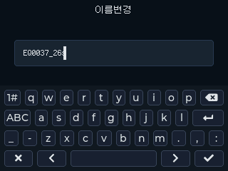
파일 목록에서 파일을 1초쯤 꾹 누르면 이름을 바꿀 수 있습니다. 내부 메모리 · SD 카드 · 참조 세 곳 모두에서 됩니다.
- 이 장비에는 시계가 없어 파일에 날짜가 남지 않습니다. 번호만으로는 언제 누가 한 측정인지
알기 어렵습니다. 이름 앞에
0728 HW처럼 날짜나 이니셜을 적어 두면 구분하기 좋습니다. - 목록은 이름 순서로 정렬됩니다. 이름 앞부분을 바꾸면 순서도 그에 맞춰 바뀝니다 — 사람별로 묶어 보고 싶다면 이니셜을 앞에, 최신 순서를 지키고 싶다면 번호를 앞에 두세요.
- 기기 키보드는 영문·숫자만 지원합니다. 한글 이름이 필요하면 PC에서 파일명을 바꿔 SD에 다시 넣으세요.
- 같은 이름이 이미 있으면 바꾸지 않고 알려 줍니다 — 기존 파일을 덮어쓰지 않습니다.
- 호흡 훈련 기록도 같은 방법으로 바꿉니다. 다만 그쪽은 가운데 이름 부분만 바뀝니다 (8.7).
7. 리듬 훈련
이퀄라이징은 일정한 간격으로 반복할 때 안정적인 리듬이 잡힙니다. Equalscope는 이를 돕는 두 가지 도구를 제공합니다.
7.1 EQ 인터벌
구간별로 (간격 × 횟수)를 정해 두면, 측정을 시작하는 순간부터 그 순서대로 비프음 + 화면 시각 신호가 울립니다. 하강 시나리오에 맞춰 이퀄 리듬을 훈련하는 도구입니다.
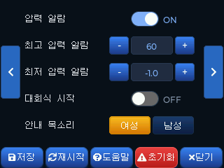
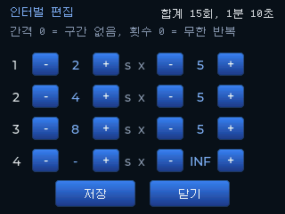
- 설정 위치: 설정 페이지 2 — EQ 인터벌 토글 + [인터벌 편집] 버튼 (9.2)
- 편집 화면: 최대 4구간, 각 구간은 간격(초) × 횟수로 지정합니다.
- 간격 0 = 구간 없음 (해당 구간 건너뜀)
- 1초 미만은 0.1초 단위로 설정할 수 있습니다 (0.1 → 0.9 → 1 → 2 → …). 빠른 리듬으로 반복하는 훈련에 쓸 수 있습니다.
- 횟수 0 = 무한 반복(∞) — 그 구간의 간격으로 계속 울립니다. 이때는 알람음이 높은 음과 낮은 음으로 번갈아 울려 박자를 타기 쉽습니다.
- 상단에 합계 횟수·총 시간이 실시간으로 표시되어 시퀀스 전체 길이를 바로 확인할 수 있습니다
- 동작: 측정 [시작]과 동시에 구간 1부터 순서대로 진행합니다. 알람 시점이 그래프의 시간축과 일치하므로, 훈련 후 그래프에서 그대로 되짚어 볼 수 있습니다.
- 활용 예: "2초×5 → 4초×5 → 8초×5" — 하강 초반에는 잦게, 내려갈수록 간격을 늘리는 식으로 수심 구간별 이퀄 빈도를 미리 설계해 훈련합니다. 한 구간만 두고 무한 반복으로 쓰면 단순 메트로놈처럼도 쓸 수 있습니다.
- 그래프 알람 마커: 알람이 울린 위치가 그래프에 세로선으로 표시됩니다 (구간이 바뀌는 첫 알람은 더 길게). 줌·스크롤을 해도 함께 움직여, "알람 시점 vs 실제 이퀄"을 비교하며 리듬을 점검할 수 있습니다.
- 기록 보존: 알람 위치는 측정 CSV 파일에도 저장되어, 나중에 파일을 다시 열어도 마커가 그대로 표시됩니다.
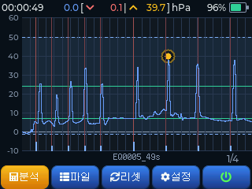
7.2 스톱워치
측정 중 경과 시간을 hh:mm:ss로 메인 화면 좌측 상단에 실시간 표시합니다. 트레이닝 진행 시간을 한눈에 확인할 수 있고, EQ 인터벌과 함께 인터벌 훈련의 시간 관리에 쓰입니다.
8. 호흡 훈련 (CO2 / O2)
Equalscope에는 이퀄라이징 측정과 별개의 모드가 하나 더 있습니다. 호흡 훈련 모드는 숨참기와 회복 호흡을 테이블대로 반복하며 이산화탄소 내성과 저산소 내성을 기르는 드라이 트레이닝 도구입니다. 시간을 재고, 음성으로 안내하고, 훈련 결과를 기록으로 남깁니다.
⚠️ 물에서는 절대 사용하지 마세요. 호흡 훈련은 반드시 물 밖에서, 앉거나 누운 안전한 자세로 합니다. 물에서의 숨참기 훈련은 버디 또는 강사와 함께여야 하며, 이 장비는 그 자리를 대신하지 않습니다.
8.1 모드 전환
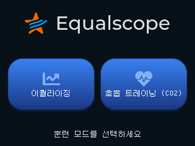
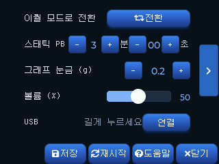
- 전원을 켜면 두 모드 중 하나를 고르는 화면이 나옵니다.
- 이 화면이 번거로우면 설정 → 부팅 시 모드 선택을 끄면 됩니다. 그러면 기본 모드로 바로 들어갑니다.
- 쓰는 중에 모드를 바꾸려면 각 모드의 설정에서 [전환]을 누릅니다. 확인 후 저장하고 다시 시작합니다 (측정 중에는 전환되지 않습니다).
8.2 시작하기 전에 — 안전 안내
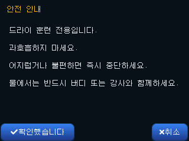
호흡 훈련을 처음 시작하면 아래 안내가 전체 화면으로 한 번 표시됩니다. [확인했습니다]를 누르면 다음부터는 나오지 않습니다.
- 드라이 훈련 전용입니다. 물속·물가에서 쓰지 마세요.
- 과호흡하지 마세요. 숨참기 전 과호흡은 블랙아웃 위험을 크게 높입니다.
- 어지럽거나 불편하면 즉시 중단하세요. 참는 것이 훈련이 아닙니다.
- 물에서는 반드시 버디 또는 강사와 함께하세요.
⚠️ 혼자 있을 때, 운전 중, 욕조·수영장 근처에서는 절대 하지 마세요. 숨참기 훈련은 예고 없이 의식을 잃을 수 있습니다.
8.3 홈 화면 보는 법

- 왼쪽 위 — 지금 고른 테이블의 이름
- 가운데 위 —
8R / 21:00= 8라운드, 전체 21분 - 목록 — 라운드별 호흡 시간 / 숨참기 시간. 라운드가 많으면 위아래로 넘겨 봅니다.
- 하단 버튼 —
[시작] [파일] [테이블] [설정] [전원]
8.4 테이블 고르기
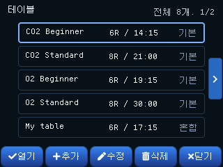
훈련은 테이블을 따라 진행됩니다. 테이블은 라운드마다 호흡 시간과 숨참기 시간이 적힌 계획입니다. 무엇을 늘리고 무엇을 고정하느냐에 따라 훈련 목적이 달라집니다.
| 종류 | 어떻게 변하나 | 무엇을 기르나 |
|---|---|---|
| CO2 테이블 | 숨참기는 고정, 호흡(회복) 시간이 점점 줄어듭니다 | 이산화탄소가 쌓인 상태를 견디는 힘 — 숨참기 초·중반의 답답함 |
| O2 테이블 | 호흡은 고정, 숨참기 시간이 점점 늘어납니다 | 산소가 줄어든 상태를 견디는 힘 — 숨참기 후반 |
기본으로 들어 있는 테이블 4종입니다. 지우거나 고칠 수 없고, 대신 [수정]을 누르면 그 값을 밑그림으로 새 테이블이 하나 만들어집니다.
| 이름 | 라운드 | 호흡 | 숨참기 |
|---|---|---|---|
| CO2 Beginner | 6R | 2:00에서 15초씩 줄어듦 | 1:00 고정 |
| CO2 Standard | 8R | 2:00에서 15초씩 줄어듦 | 1:30 고정 |
| O2 Beginner | 6R | 2:00 고정 | 1:00에서 5초씩 늘어남 |
| O2 Standard | 8R | 2:00 고정 | 1:10에서 10초씩 늘어남 |
- 오른쪽 위
전체 8개. 1/2— 테이블이 모두 몇 개인지와 지금 몇 쪽인지. 쪽 넘김은 좌우 화살표. - 오른쪽 꼬리표 —
기본은 기본 제공 테이블,혼합은 직접 만든 테이블입니다. - 테이블 이름은 영문으로 지어 주세요. 테이블 이름이 기록 파일 이름에 그대로 들어가는데, 영어 화면에서는 한글이 깨져 보입니다. 기기 키보드도 영문·숫자만 지원합니다.
8.5 내 테이블 만들기
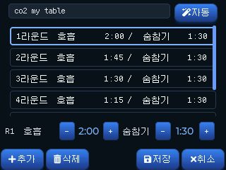
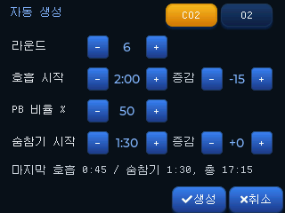
테이블 목록에서 [추가]를 누르면 편집 화면이 열립니다. 테이블은 최대 50개, 한 테이블은 최대 30라운드까지 만들 수 있습니다.
- 편집 화면 — 목록에서 라운드를 고르고 아래쪽
[-] [+]로 호흡·숨참기 시간을 바꿉니다. [+추가]로 라운드를 늘리고, [삭제]로 줄입니다. 맨 위 칸에 이름을 적습니다. - [자동] — 하나씩 누르는 대신 규칙으로 한 번에 채웁니다.
- CO2 / O2 — 어느 쪽 테이블을 만들지 고릅니다
- 라운드 — 몇 번 반복할지
- 호흡 시작 · 증감 — 첫 라운드의 호흡 시간과, 라운드마다 더할 값(줄이려면 음수)
- 숨참기 시작 · 증감 — 같은 방식
- PB 비율 % — 내 스태틱 최고 기록의 몇 %로 숨참기를 시작할지. 값을 바꾸면 바로 아래 숨참기 시작이 따라 계산됩니다 (PB는 8.8에서 입력)
⚠️ 테이블은 스스로에게 맞게 만드세요. 남의 테이블이나 기본 테이블이 힘들면 라운드를 줄이거나 시간을 낮추는 것이 맞습니다. 테이블을 끝까지 채우는 것이 목표가 아닙니다.
8.6 훈련하기
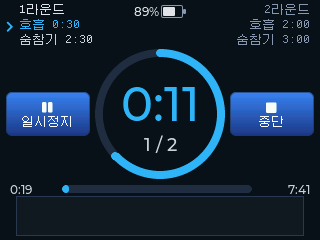

- 색으로 구분 — 파랑이면 호흡, 주황이면 숨참기입니다. 가운데 큰 숫자는 남은 시간, 그 아래는 몇 번째 라운드인지입니다.
- 위쪽 양옆 — 왼쪽은 지금 라운드, 오른쪽은 다음 라운드의 계획 시간입니다.
- 아래쪽 막대 — 훈련 전체에서 어디쯤 왔는지. 왼쪽은 지난 시간, 오른쪽은 남은 시간입니다.
- [일시정지] — 잠시 멈춥니다. 다시 누르면 이어서 진행합니다.
- [중단] — 훈련을 끝냅니다. 중단해도 그때까지의 기록은 저장됩니다.
음성 안내가 함께 나옵니다. 화면을 계속 보지 않아도 눈을 감고 훈련할 수 있습니다.
- 구간이 바뀔 때 Breathe / Hold를 알려 줍니다
- 남은 시간이 1분 단위, 30초, 10초, 5·4·3·2·1일 때 알려 줍니다
- 첫 숨참기는 대회 방식으로 시작합니다 — 3·2·1 → official top → plus 1~5. 실제 경기와 비슷한 감각을 만들기 위한 것으로, 첫 라운드에서 한 번만 나옵니다
- 음성은 영어입니다. 대회 진행이 영어로 이뤄지기 때문입니다. 소리 크기는 설정에서 조절합니다
8.7 훈련 기록
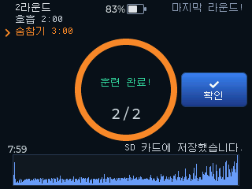
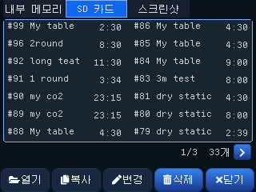
- 완료 화면 — 몇 라운드를 했는지, 계획 시간과 실제 진행 시간, 그리고 저장 위치(SD 카드 / 내부 메모리)를 알려 줍니다. SD 카드에 문제가 있으면 내부 메모리에 대신 저장하고 그 사실을 표시합니다.
- 기록 목록 — 위쪽 탭으로 내부 메모리 / SD 카드를 오갑니다. 번호가 클수록 최근 기록입니다.
- 이름 바꾸기 — 목록에서 기록을 1초쯤 꾹 누르면 이름을 바꿀 수 있습니다.
이 장비에는 시계가 없어 기록에 날짜가 남지 않습니다.
0728 HW처럼 날짜나 이름을 적어 두면 나중에 구분하기 좋습니다. - [복사]로 내부 메모리와 SD 카드 사이를 옮기고, [삭제]로 지웁니다.

- 맨 위에 전체 라운드 수 · 실제 진행 시간 · 완주/중단이 요약됩니다.
- 아래 표는 라운드별 호흡 / 숨참기 / 완료 시각입니다. 완료 시각은 훈련 시작부터의 누적 시간입니다.
- 기록은 CSV 파일이라 PC로 옮겨 엑셀·구글 시트에서 열어 볼 수 있습니다 (6.8).
8.8 호흡 모드 설정
| 항목 | 범위 / 선택 | 설명 |
|---|---|---|
| 부팅 시 모드 선택 | ON / OFF | 끄면 전원을 켤 때 기본 모드로 바로 들어갑니다 |
| 기본 모드 | 이퀄 / 호흡 | 위 항목이 꺼져 있을 때 어느 모드로 들어갈지 |
| 이퀄 모드로 전환 | — | 확인 후 저장하고 다시 시작합니다 |
| 스태틱 PB | 분 · 초 | 내 스태틱 최고 기록. 자동 생성의 PB 비율 기준으로만 쓰입니다 (최소 30초) |
| 볼륨 | 0~100 % | 음성 안내와 알람의 크기 |
이퀄 모드의 설정은 9장에 따로 있습니다. 두 모드의 설정은 서로 독립적이며, 부팅 시 모드 선택 · 기본 모드 · 모드 전환 세 가지만 양쪽에 똑같이 들어 있습니다.
9. 설정
메인 화면에서 [설정]을 누르면 열립니다. 설정은 4개 페이지로 구성되며, 좌우 화살표로 페이지를 이동합니다.
설정 페이지 한눈에 보기

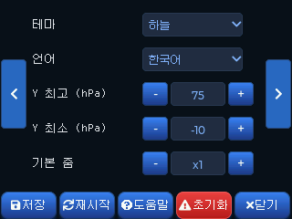
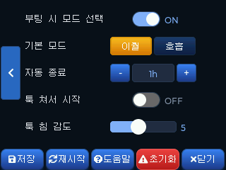
| 페이지 | 항목 |
|---|---|
| 1 | 테마 · 자동 종료 · 밝기 · 볼륨 · 파일 전송(USB) |
| 2 | EQ 인터벌 · 인터벌 편집 · 압력 알람 · 최고 압력 · 최저 압력 |
| 3 | 언어 · Y축 최고 · Y축 최저 · 기본 줌 · 대회식 시작 |
| 4 | 부팅 시 모드 선택 · 기본 모드 · 호흡 모드로 전환 |
아래는 기능별로 묶어 설명합니다. (각 항목이 어느 페이지에 있는지 함께 표시)
9.1 화면


| 항목 | 페이지 | 범위 / 선택 | 설명 |
|---|---|---|---|
| 테마 | 1 | 밝은 · 연지 · 단풍 · 라임 · 하늘 · 네온 · 라벤더 (7종) | 색상 테마 선택 |
| 밝기 | 1 | 10~100 % (10 단위) | 화면 백라이트 밝기 |
| 언어 | 3 | 한국어 / English | 표시 언어 |
9.2 소리
| 항목 | 페이지 | 범위 | 설명 |
|---|---|---|---|
| 볼륨 | 1 | 0~100 % | 인터벌·알람음 크기 (슬라이더) |
| EQ 인터벌 | 2 | ON / OFF | 구간별 알람 시퀀스 켜기/끄기 (7.1) |
| 인터벌 편집 | 2 | 4구간 (간격×횟수) | 간격 0 = 구간 없음 · 1초 미만은 0.1초 단위 · 횟수 0 = 무한 반복(∞) |
| 압력 알람 | 2 | ON / OFF | 켜면 설정한 압력 범위를 벗어날 때 알람 + 그래프에 훈련 밴드 표시 (4.3) |
| 최고 압력 | 2 | 0~150 hPa (5 단위) | 알람·훈련 밴드의 상한 |
| 최저 압력 | 2 | -20~100 hPa | 알람·훈련 밴드의 하한 (0 부근은 1 단위로 미세 조정) |
| 대회식 시작 | 3 | ON / OFF | 측정을 대회 방식으로 시작합니다 (아래 설명) |
대회식 시작을 켜면 [시작]을 눌러도 바로 측정이 시작되지 않습니다. 3 · 2 · 1 → official top 음성이 나온 뒤 official top 순간부터 측정·스톱워치· EQ 인터벌이 함께 시작합니다. 이어서 plus 1 ~ 5가 안내됩니다.
- 실제 경기 진행과 같은 흐름이라, 대회를 앞둔 훈련에서 시작 감각을 맞추는 데 씁니다.
- 카운트다운 중에는 측정이 돌지 않으므로 준비 시간이 그래프에 섞이지 않습니다.
- 카운트다운 중 화면을 누르면 취소됩니다.
- 음성은 호흡 훈련 모드와 같은 영어 안내를 씁니다 (8.6).
9.3 그래프
| 항목 | 페이지 | 범위 | 설명 |
|---|---|---|---|
| Y축 최고 | 3 | 10~200 hPa (5 단위) | 그래프 세로축 위쪽 한계 |
| Y축 최저 | 3 | -50~190 hPa (5 단위) | 그래프 세로축 아래쪽 한계 |
| 기본 줌 | 3 | — | 측정 시작 시 적용되는 기본 시간축 배율 |
9.4 기타
| 항목 | 페이지 | 범위 | 설명 |
|---|---|---|---|
| 자동 종료 | 1 | 0~120 분 | 일정 시간 무동작 시 자동으로 전원 끔. 0이면 자동 종료 안 함 |
| 파일 전송(USB) | 1 | — | [연결] 1.5초 롱프레스로 PC 연결 (6.8) |
| 부팅 시 모드 선택 | 4 | ON / OFF | 끄면 전원을 켤 때 기본 모드로 바로 들어갑니다 (8.1) |
| 기본 모드 | 4 | 이퀄 / 호흡 | 위 항목이 꺼져 있을 때 어느 모드로 들어갈지 |
| 호흡 모드로 전환 | 4 | — | 확인 후 저장하고 다시 시작합니다 (8장) |
9.5 하단 버튼
설정 화면 아래의 버튼들입니다. [저장] [재시작] [도움말] [초기화] [닫기]
| 버튼 | 동작 |
|---|---|
| 저장 | 변경한 설정을 기기에 저장 |
| 재시작 | 기기 재부팅 (일부 설정은 재시작 후 반영) |
| 도움말 | 조작·기능 요약 도움말 화면 (하단에 펌웨어 버전 표시) |
| 초기화 ⚠️ | 모든 설정을 공장 초기값으로 되돌림 (테마·밝기·알람·Y축 등). 빨간색 강조 — 되돌릴 수 없으니 주의 |
| 닫기 | 설정 화면 종료 |
초기화는 "설정"만 되돌립니다. 저장된 측정 파일·스크린샷과 파일 번호(다음 측정에 매겨질 번호)는 그대로 유지됩니다. 측정 기록이 지워지지 않으니 안심하고 사용하세요.
변경 후 [저장]을 눌러야 유지됩니다. 저장하지 않고 닫으면 일부 변경이 반영되지 않을 수 있습니다.
10. 관리와 업데이트
10.1 펌웨어 업데이트
새 펌웨어는 SD 카드를 통해 자동으로 설치됩니다. PC 연결이나 별도 프로그램이 필요 없습니다.
- 배포받은 펌웨어 파일(
equpdate_로 시작하는.bin파일)을 SD 카드 맨 위(루트) 폴더에 복사합니다. - SD 카드를 기기에 꽂고 전원을 켭니다.
- 부팅 중 기기가 펌웨어 파일을 자동으로 인식해 업데이트하고 재시작합니다.
- 업데이트가 끝나면 SD의 펌웨어 파일은 자동으로 삭제됩니다.
· SD에는 펌웨어 파일을 하나만 올려 두는 것을 권장합니다.
· 업데이트 후 자동 삭제되므로, 다음 부팅에서 같은 버전이 다시 설치되지 않습니다.
· 현재 펌웨어 버전은 설정 → 도움말 화면 하단에서 확인할 수 있습니다.
새 펌웨어는 equalscope.kr/download 에서 내려받을 수 있습니다. 새 펌웨어가 올라오면 파일을 받아 위 순서대로 업데이트하세요.
10.2 영점 보정과 센서 정확도
- 부팅할 때마다 자동으로 영점(0점)을 다시 잡습니다. 정확한 측정을 위해, 전원을 켤 때는 이퀄 벤트에 압력을 가하지 말고 대기압 상태로 두세요 (1.2).
- 센서는 출하 전 보정을 거쳐 측정 정확도를 맞춰 두었습니다.
10.3 보관과 세척
- ⚠️ 본체는 방수가 되지 않습니다. 절대 물로 씻지 마세요. 물이 닿지 않도록 주의하세요.
- 이퀄 벤트: 내부에 인서트 너트가 있어 물 세척에 적합하지 않습니다. 코에 닿는 부위를 물티슈로 닦은 뒤 바로 물기를 제거하는 것을 권장합니다. 내부 세척이 필요할 때는 면봉을 사용해 닦아 주세요.
- 위생(개인·공용): 이퀄 벤트는 코·입 주변에 닿으므로 개인별 사용을 권장합니다. 교육 현장처럼 여러 사람이 함께 쓸 때는 사용자가 바뀔 때마다 접촉 부위를 소독용 물티슈로 닦고 완전히 건조한 뒤 사용하세요.
- 튜브: 연결 부품을 모두 분리한 뒤 물로 세척하고, 완전히 말려서 사용하세요.
- 배터리: 장기간 사용하지 않을 때는 충전해 두고 보관하는 것을 권장합니다.
11. 문제 해결 (FAQ)
| 증상 | 확인 사항 |
|---|---|
| 표면 결·단차·작은 틈 (불량인가요?) | 일부 부품은 3D 프린팅으로 제작되어 적층 결, 미세한 단차, 표면 질감 차이, 조립부의 작은 틈이 있을 수 있습니다. 제작 방식에 따른 자연스러운 차이이며, 기능과 내구성에 문제가 없는 제품만 검수 후 발송됩니다. |
| SD 카드를 인식하지 못함 | FAT32로 포맷되어 있는지 확인하고, 카드를 다시 꽂아 보세요 |
| 측정이 저장되지 않음 | 신호가 너무 짧거나 약하면 저장되지 않습니다. 실제 이퀄라이징 구간이 충분히 길게 측정되었는지 확인하세요 (6.1) |
| 그래프가 0 아래로 내려감 / 영점이 어긋남 | 전원을 끄고 다시 켜서 영점을 재보정하세요. 켤 때 압력을 가하지 않도록 주의 |
| 스크린샷이 저장되지 않음 | 스크린샷은 SD 카드에만 저장됩니다. SD 카드가 꽂혀 있는지 확인하세요 (6.7) |
| 분석 패턴이 예상과 다름 | 측정 중 기술이 일관되지 않으면 경계 패턴으로 분류될 수 있습니다 (5.3) |
12. 안전·주의
- 호흡 훈련(숨참기)은 물 밖에서만 하세요. 예고 없이 의식을 잃을 수 있습니다. 혼자 있을 때·운전 중·물가에서는 절대 하지 마시고, 물에서는 반드시 버디 또는 강사와 함께하세요 (8.2).
- 숨참기 전 과호흡을 하지 마세요. 블랙아웃 위험을 크게 높입니다.
- 이 장비는 의료기기가 아닙니다. 측정값과 분석은 훈련 보조 및 참고용이며, 진단이나 안전 보증의 근거가 아닙니다.
- 무리한 압력을 가하지 마세요. 과도한 가압은 부상을 유발할 수 있습니다. "과압" 경고가 뜨면 강도를 낮추세요 (5.4).
- 모든 이퀄라이징·프리다이빙 훈련은 자격 있는 강사의 지도 아래 진행하세요.
- 분석 결과의 조언은 측정된 압력 패턴에 기반한 참고 정보입니다.